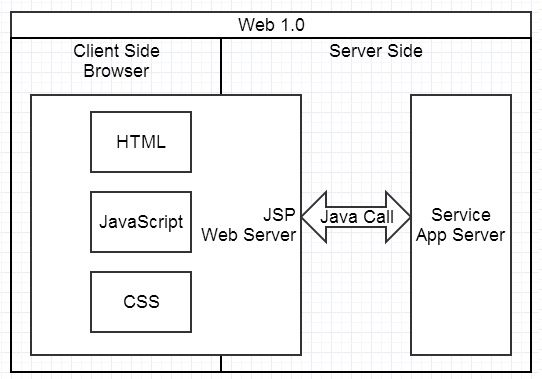
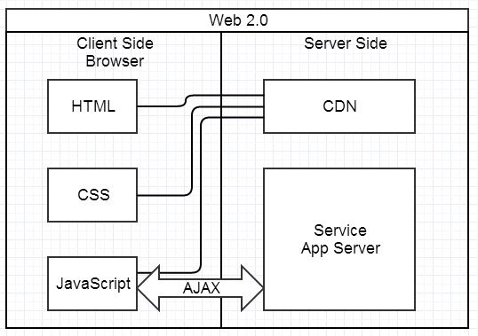
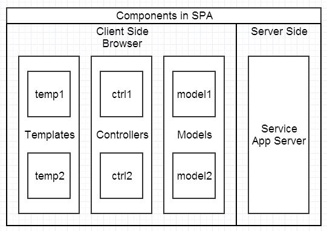
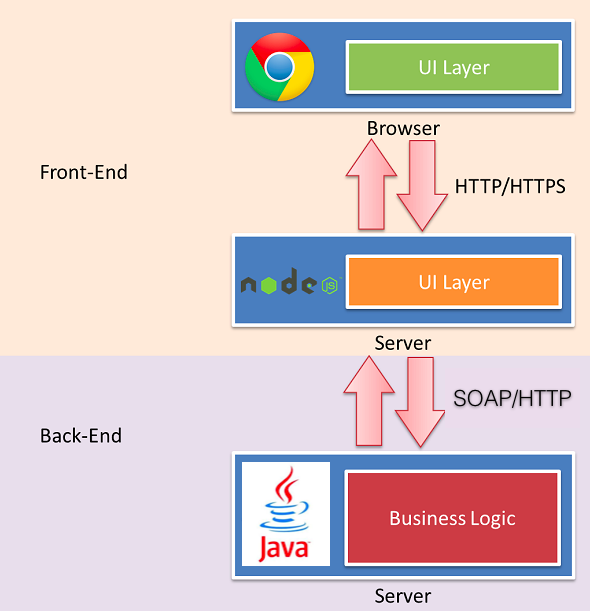

Vue的服务器端渲染
彭一
目录
1. 什么是服务器端渲染
Server Side Render
背景
Web研发模式的演变
1. Web 1.0

2. Struts MVC
3. Web 2.0

4. Single Page Application

5. Full Stack

结论
服务器端生成静态HTML返回客户端，然后与客户端混合成为可交互的应用程序
2. 为什么要服务器端渲染
Why SSR
前端两个痛点
- SEO(Search Engine Optimization)
- 首屏渲染性能
3. Vue服务器端渲染原理
Vue SSR Principle
技术栈
- Vue + Vue-router + Vuex
- Webpack
- Express/Koa
构建步骤

4. 实现服务器端渲染
Vue SSR Implement
渲染核心
- vue-server-renderer
- 依赖于Node原生模块
- 作用：将vue实例渲染为HTML片段
- createRenderer()
- createBundleRenderer()
约束条件
- 针对每个请求每个vue实例都应该是全新的，避免状态污染
-
vue组件的生命周期钩子只有
beforeCreate和created在SSR过程中被调用 - 浏览器端独有的变量或者api无效，比如window、document